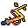

#13 · weapon_13MegabonkSpace NoodleНаша иконкаRift LashРазломная плетьЭффект оригинала в MegabonkСвязывает персонажа с врагом и наносит урон целям между ними.ИсточникНаш PNG · 13Связь по ID · JSONОсновной — актуальный · weapons-current64 px32 px
 32 px
32 px